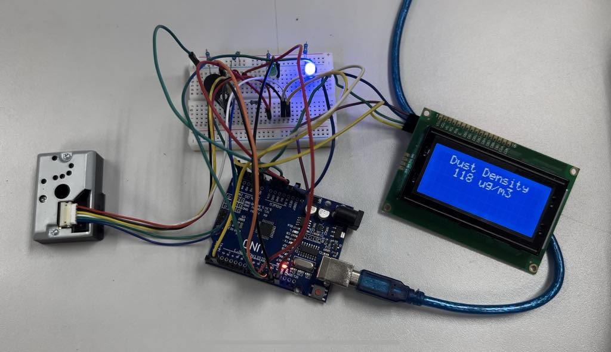

MMI220 Project: Air Quality Sensor
โปรเจคนี้ สร้างขึ้นเพื่อตรวจวัดความหนาแน่นและความอันตรายของฝุ่นในอากาศบริเวณนั้นๆ
หลักการทำงาน: เครื่องจะใช้เซ็นเซอร์เพื่อตรวจจับละอองฝุ่นที่เข้ามา เมื่อมีฝุ่นผ่านเข้ามายังเซ็นเซอร์
โค้ดที่ตั้งโปรแกรมไว้จะทำการประมวลผลค่าเพื่อกำหนดระดับความเข้มข้นของฝุ่น
เครื่องจะมีไฟแสดงสถานะและเสียงเตือนเพื่อตรวจสอบระดับอันตรายของฝุ่นที่ตรวจจับได้
ไฟสีฟ้า: แสดงถึงระดับความปลอดภัย
ไฟสีเหลือง: แสดงถึงค่ากลาง
ไฟสีแดงและเสียงแจ้งเตือน: แสดงถึงระดับอันตราย
การตรวจวัดนี้ช่วยให้ผู้ใช้งานสามารถสังเกตค่าความอันตรายของฝุ่นได้ เพื่อหลีกเลี่ยงหรือเพื่อแก้ปัญหาต่อไปได้